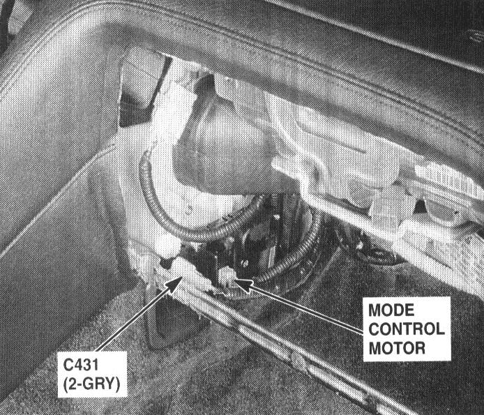

Operation CHARM
: Car repair manuals for everyone.
Home
>>
Acura
>>
1994
>>
NSX V6-3.0L DOHC
>>
Repair and Diagnosis
>>
Heating and Air Conditioning
>>
Air Door
>>
Air Door Actuator / Motor
>>
Locations
>>
Mode Control Motor
Mode Control Motor

Behind Left Side Of Glove Box